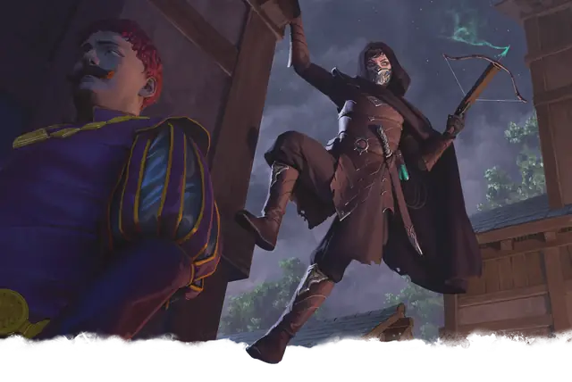

Ассасин
Assassin
Средний или Маленький Гуманоид, Нейтральный

Класс Защиты 16 Инициатива +10 (20)
Хиты 97 (15к8 + 30)
Скорость 30 футов
| мод | спас | ||
|---|---|---|---|
| СИЛ | 11 | +0 | +0 |
| ЛОВ | 18 | +4 | +7 |
| ТЕЛ | 14 | +2 | +2 |
| мод | спас | ||
|---|---|---|---|
| ИНТ | 16 | +3 | +6 |
| МДР | 11 | +0 | +0 |
| ХАР | 10 | +0 | +0 |
Сопротивление урону Яд
Чувства пассивное Восприятие 16
Языки Общий, Воровской жаргон
Опасность 8 (3 900 опыта; БВ +3)
Особенности
Увёртливость. Если ассасин подвергается эффекту, позволяющему совершить спасбросок Ловкости, чтобы получить только половину урона, то вместо этого он вообще не получает никакого урона, если преуспевает в спасброске, и только половину, если проваливает его; для этого он не должен быть Недееспособным.
Действия
Мультиатака. Ассасин совершает три атаки Коротким мечом или Лёгким арбалетом в любой комбинации.
Короткий меч. Бросок рукопашной атаки: +7, досягаемость 5 фт. Попадание: 7 (1к6 + 4) Колющего урона плюс 17 (5к6) урона Ядом, и цель становится Отравленной до начала начала следующего хода ассасина.
Лёгкий арбалет. Бросок дальнобойной атаки: +7, дистанция 80/320 фт. Попадание: 8 (1к8 + 4) Колющего урона плюс 21 (6к6) урона Ядом.
Бонусные действия
Хитрое действие. Ассасин совершает действие Рывок, Отход или Затаивание.
Бонус мастерства +3
Среда обитания Любая
Сокровища Личные, Инструментальные
Ассасин
Наёмный убийца
Ассасины — это профессиональные убийцы, способные тихо приблизиться к своей жертве и нанести незаметный удар. Большинство из них убивают по какой-то причине, делая это за деньги богатых нанимателей или преследуя безнравственные цели. Они используют яды и другие смертоносные инструменты, а также разнообразное снаряжение, которое помогает им проникать в охраняемые области или избегать поимки.
Многие ассасины придерживаются кредо или имеют фирменный почерк. Совершите бросок по таблице «Modus Operandi ассасина» для вдохновения или выберите сами отличительную особенности ассасина.
Modus Operandi ассасина
| 1к6 | Этот ассасин знаменит тем, что... |
| 1 | Создаёт с помощью трупов своих жертв живописные сцены. |
| 2 | Прячется внутри крупных предметов, таких как набор доспехов или полая мебель. |
| 3 | Оставляет на месте преступления сувенир, например визитную карточку, цветок, морскую ракушку или зуб. |
| 4 | Выдаёт себя за знаменитостей, святых или слуг. |
| 5 | Собирает трофеи у своих жертв. |
| 6 | Использует яд с характерным цветом или запахом. |